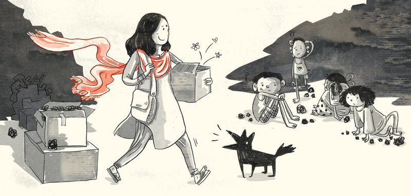
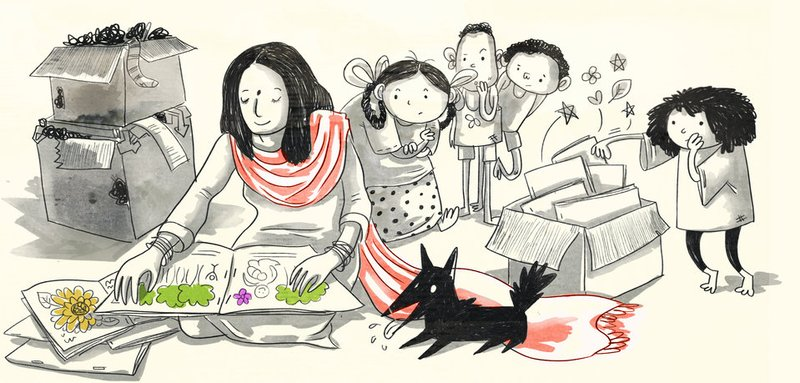
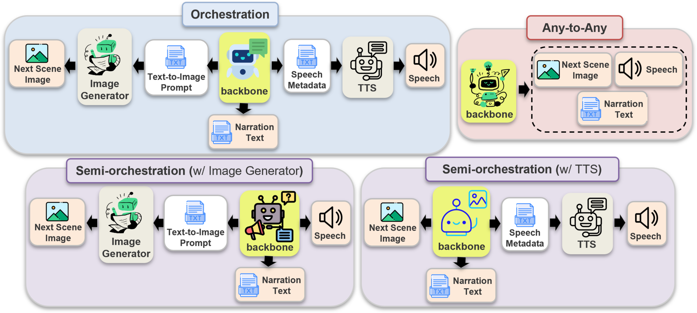
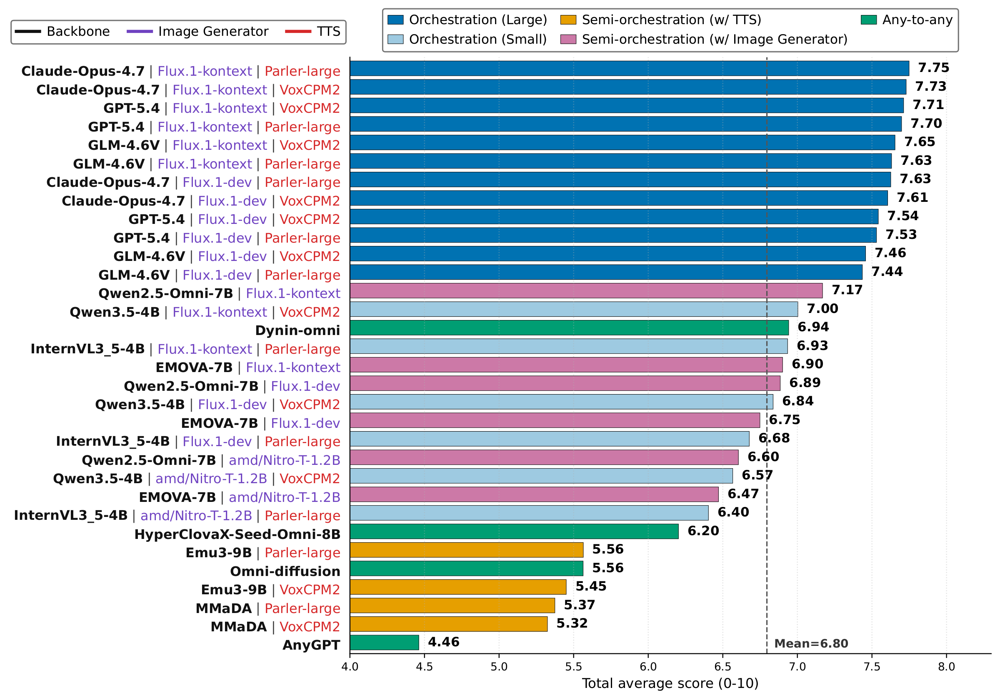
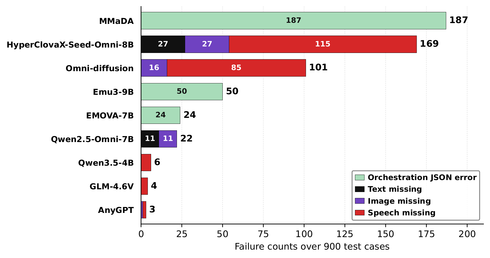
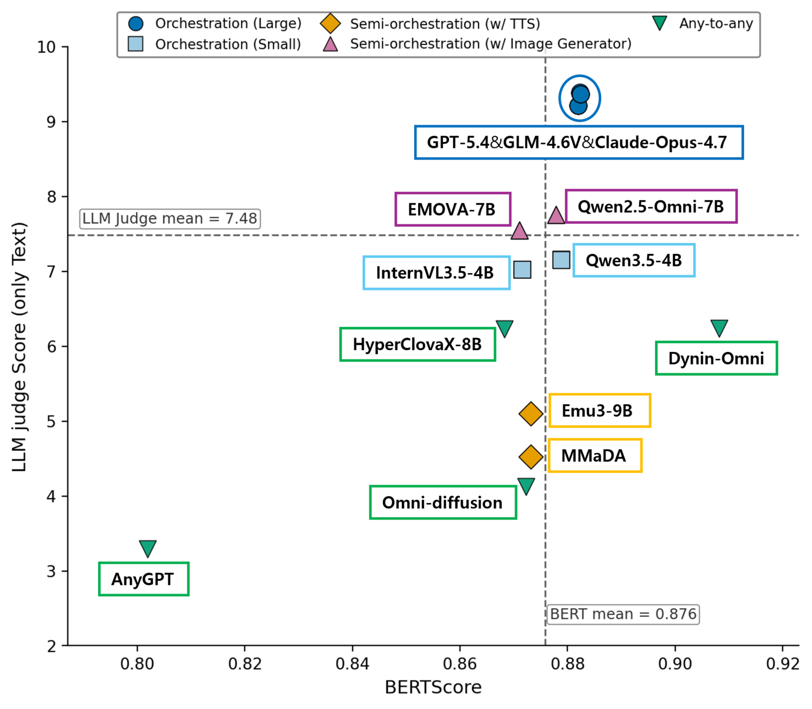
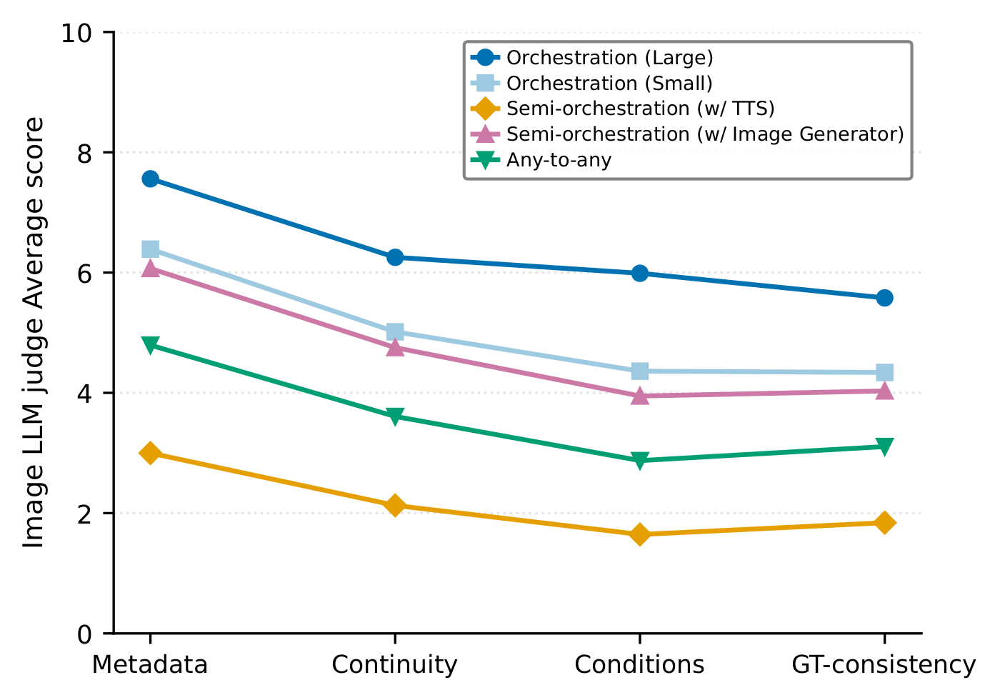

Omnimodal evaluation should go beyond independent text, image, and speech production: individually plausible outputs may not express a coherent shared event. We introduce Omni-StoryBench, a story-grounded omnimodal benchmark evaluating whether models can coherently continue stories across image, narration, and speech. Each instance provides a current storybook page and structured next-page conditions, requiring models to generate the next illustration, narration, and spoken character utterance. Omni-StoryBench contains 900 rigorously validated story transitions from openly licensed children's books, with ground-truth next-page references and speech metadata. We evaluate systems with modality-specific metrics and consistency-centered LLM-as-a-judge rubrics for context preservation, condition following, reference consistency, and cross-modal coherence. Across 32 baseline configurations spanning orchestration, semi-orchestration, and native any-to-any paradigms, we find orchestration with strong VLM planning most reliable, while current native omnimodal models often struggle with output completeness and controllability. Our analysis shows text-side performance is associated with image and speech quality, but image generation and visual continuity form the clearest observed bottleneck among the evaluated configurations. These results position Omni-StoryBench as a system-level benchmark measuring coherent omnimodal generation beyond isolated modality quality.
A storybook is a sequence of pages, each with an illustration, narration text, and speech information. Given the current page's image and narration, book-level metadata, and conditions for the expected next page, a model must generate the next page as a coordinated image, narration, and spoken character utterance describing the same narrative state. A successful continuation satisfies four properties:
Even high-quality individual outputs fail as an omnimodal response if they contradict one another or do not coherently continue the story.
We collected children's storybooks from four websites providing openly licensed materials and extracted 91,449 candidate page transitions, with the current page as input and the next page as ground truth. Each transition is augmented with three types of metadata:
Annotations were produced with large language and vision-language models, then filtered in three phases: rule-based filters, VLM-based quality scoring that kept each book's best transition and the top 1,000 overall, and inspection and revision by 16 human reviewers, yielding the final 900 examples.
| Source | License | # Books | # Page pairs | # Final samples |
|---|---|---|---|---|
| African Storybook (ASB approved) | CC BY 4.0 | 699 | 7,528 | 54 |
| Global Digital Library | CC BY / CC BY-SA | 1,271 | 11,418 | 293 |
| Storybooks Canada | CC BY / CC BY-NC | 40 | 420 | 7 |
| Storyweaver | CC BY 4.0 | 9,424 | 72,083 | 546 |
| Total | 11,434 | 91,449 | 900 |
Book: Didi and the Colorful Treasure · Source: Global Digital Library · Transition: page_005 → page_006
Input

Current page narration
One day, Didi came to the dump. She had a red dupatta. Didi looked at the children running around. Then she looked for a place to sit. She opened her bag and took out something.
Next-page condition
| Character | Emotion | Visibility | Action / speech intent |
|---|---|---|---|
| Didi | happy, inviting | full | sits on the ground and opens a colorful book; encourages children to come closer |
| The children | curious, eager | full | gather around Didi, looking at the books with wonder |
| Scene | A garbage dump area with cardboard boxes and scattered trash, but brightened by colorful books and a red dupatta spread on the ground; children are drawn in by the vibrant illustrations. |
|---|---|
| Text instruction | Describe the children's growing curiosity as they move closer to Didi and her colorful books filled with stories. |
| Ambient sound | soft rustling of pages, children’s quiet murmurs of excitement, and distant wind through trash |
| Genre | Slice of Life |
|---|---|
| Topic | A kind woman teaches children to read at a garbage dump, transforming their lives through stories. |
| Style | Simple and heartwarming |
| Narrative tense | Past |
| Narrative perspective | Third-person omniscient |
| Name | Role | Key attributes |
|---|---|---|
| Didi | protagonist | kind, generous, dedicated |
| The children | supporting | curious, eager to learn, friendly |
Ground truth

Next page narration
The children were curious. They moved a bit closer. Didi had lots of colourful books. The books had stories inside them. The children moved closer and closer.
Speech utterance
“Come closer, let me show you my stories!”
Speech metadata
| Speaker | Didi |
|---|---|
| Emotion | happy |
| Speed | normal |
| Pitch | high |
| Gender | female |
Illustrations and narration from Didi and the Colorful Treasure by Rukmini Banerji, illustrated by Kaveri Gopalakrishnan, © Pratham Books, adapted by The Asia Foundation – Let's Read, CC BY 4.0, via Global Digital Library. Images resized. More examples, with model outputs, are in the dataset viewer.
We combine traditional automated metrics with LLM-as-a-judge rubrics.
The Total Average is the unweighted mean of these seven scores, with 0–1 metrics rescaled to 0–10. Quality scores are computed over examples whose required outputs are available; generation failures are reported separately.

In Orchestration, the backbone only outputs text. In Semi-orchestration, the backbone generates two of the three modalities and an expert module generates the remaining one. Any-to-any models generate all three modalities with a single backbone.
We evaluate 32 configurations across three paradigms:

Ranking by the seven-metric Total Average. Each metric is averaged over examples with its required outputs available, and each LLM-judge score averages three judges. Generation failures are reported separately below.
Click a column header to sort. BERT, CLIP, and Meta (speech metadata accuracy) are on a 0–1 scale; JT, JI, JS, JJ are the text, image, speech, and integrated judge scores (1–10), each averaging three judges. Bold marks the best value in each column.
| Paradigm | Backbone | Image | Speech | BERT | CLIP | Meta | JT | JI | JS | JJ | Total |
|---|---|---|---|---|---|---|---|---|---|---|---|
| Orch. (Large) | GPT-5.4 | FLUX.1-dev | Parler-large | 0.882 | 0.732 | 0.584 | 9.386 | 5.788 | 6.752 | 8.797 | 7.530 |
| Orch. (Large) | GPT-5.4 | FLUX.1-Kontext | Parler-large | 0.882 | 0.772 | 0.584 | 9.384 | 6.489 | 6.752 | 8.879 | 7.699 |
| Orch. (Large) | GPT-5.4 | FLUX.1-dev | VoxCPM2 | 0.882 | 0.732 | 0.566 | 9.387 | 5.787 | 6.987 | 8.830 | 7.543 |
| Orch. (Large) | GPT-5.4 | FLUX.1-Kontext | VoxCPM2 | 0.882 | 0.772 | 0.566 | 9.389 | 6.499 | 6.987 | 8.909 | 7.712 |
| Orch. (Large) | GLM-4.6V | FLUX.1-dev | Parler-large | 0.882 | 0.707 | 0.565 | 9.217 | 5.995 | 6.522 | 8.773 | 7.436 |
| Orch. (Large) | GLM-4.6V | FLUX.1-Kontext | Parler-large | 0.882 | 0.771 | 0.565 | 9.217 | 6.652 | 6.522 | 8.847 | 7.631 |
| Orch. (Large) | GLM-4.6V | FLUX.1-dev | VoxCPM2 | 0.882 | 0.707 | 0.539 | 9.215 | 6.000 | 6.887 | 8.813 | 7.457 |
| Orch. (Large) | GLM-4.6V | FLUX.1-Kontext | VoxCPM2 | 0.882 | 0.771 | 0.539 | 9.216 | 6.656 | 6.887 | 8.897 | 7.655 |
| Orch. (Large) | Claude-Opus-4.7 | FLUX.1-dev | Parler-large | 0.882 | 0.741 | 0.584 | 9.366 | 6.327 | 6.684 | 8.931 | 7.626 |
| Orch. (Large) | Claude-Opus-4.7 | FLUX.1-Kontext | Parler-large | 0.882 | 0.773 | 0.584 | 9.365 | 6.808 | 6.684 | 8.987 | 7.749 |
| Orch. (Large) | Claude-Opus-4.7 | FLUX.1-dev | VoxCPM2 | 0.882 | 0.741 | 0.548 | 9.367 | 6.330 | 6.896 | 8.936 | 7.606 |
| Orch. (Large) | Claude-Opus-4.7 | FLUX.1-Kontext | VoxCPM2 | 0.882 | 0.773 | 0.548 | 9.367 | 6.806 | 6.896 | 9.002 | 7.729 |
| Orch. (Small) | InternVL3.5-4B | FLUX.1-dev | Parler-large | 0.872 | 0.683 | 0.561 | 7.019 | 4.889 | 6.158 | 7.525 | 6.678 |
| Orch. (Small) | InternVL3.5-4B | FLUX.1-Kontext | Parler-large | 0.872 | 0.757 | 0.561 | 7.022 | 5.805 | 6.158 | 7.658 | 6.934 |
| Orch. (Small) | InternVL3.5-4B | Nitro-T-1.2B | Parler-large | 0.872 | 0.662 | 0.561 | 7.019 | 3.489 | 6.189 | 7.185 | 6.404 |
| Orch. (Small) | Qwen3.5-4B | FLUX.1-dev | VoxCPM2 | 0.879 | 0.713 | 0.503 | 7.154 | 5.629 | 6.316 | 7.817 | 6.837 |
| Orch. (Small) | Qwen3.5-4B | FLUX.1-Kontext | VoxCPM2 | 0.879 | 0.765 | 0.503 | 7.156 | 6.198 | 6.316 | 7.884 | 7.003 |
| Orch. (Small) | Qwen3.5-4B | Nitro-T-1.2B | VoxCPM2 | 0.879 | 0.705 | 0.503 | 7.152 | 4.144 | 6.365 | 7.434 | 6.567 |
| Semi-orch. (w/ TTS) | MMaDA | – | Parler-large | 0.873 | 0.641 | 0.515 | 4.524 | 2.057 | 5.659 | 5.090 | 5.374 |
| Semi-orch. (w/ TTS) | Emu3-9B | – | Parler-large | 0.873 | 0.583 | 0.552 | 5.104 | 2.252 | 5.988 | 5.532 | 5.565 |
| Semi-orch. (w/ TTS) | MMaDA | – | VoxCPM2 | 0.873 | 0.641 | 0.477 | 4.524 | 2.052 | 5.676 | 5.109 | 5.324 |
| Semi-orch. (w/ TTS) | Emu3-9B | – | VoxCPM2 | 0.873 | 0.583 | 0.496 | 5.105 | 2.252 | 5.724 | 5.556 | 5.450 |
| Semi-orch. (w/ Image Gen.) | Qwen2.5-Omni-7B | FLUX.1-dev | – | 0.878 | 0.687 | 0.539 | 7.756 | 4.900 | 6.502 | 8.006 | 6.885 |
| Semi-orch. (w/ Image Gen.) | EMOVA-7B | FLUX.1-dev | – | 0.871 | 0.685 | 0.540 | 7.553 | 4.956 | 6.070 | 7.706 | 6.749 |
| Semi-orch. (w/ Image Gen.) | Qwen2.5-Omni-7B | FLUX.1-Kontext | – | 0.878 | 0.762 | 0.539 | 7.757 | 5.961 | 6.502 | 8.171 | 7.169 |
| Semi-orch. (w/ Image Gen.) | EMOVA-7B | FLUX.1-Kontext | – | 0.871 | 0.775 | 0.540 | 7.553 | 5.237 | 6.070 | 7.582 | 6.901 |
| Semi-orch. (w/ Image Gen.) | EMOVA-7B | Nitro-T-1.2B | – | 0.871 | 0.658 | 0.540 | 7.554 | 3.617 | 6.070 | 7.365 | 6.471 |
| Semi-orch. (w/ Image Gen.) | Qwen2.5-Omni-7B | Nitro-T-1.2B | – | 0.878 | 0.658 | 0.539 | 7.757 | 3.528 | 6.502 | 7.696 | 6.605 |
| Any-to-any | HyperCLOVA X 8B Omni | – | – | 0.868 | 0.700 | 0.544 | 6.230 | 3.358 | 5.977 | 6.728 | 6.203 |
| Any-to-any | AnyGPT | – | – | 0.802 | 0.652 | 0.419 | 3.295 | 2.028 | 3.286 | 3.894 | 4.462 |
| Any-to-any | Omni-Diffusion | – | – | 0.872 | 0.695 | 0.485 | 4.123 | 3.157 | 5.731 | 5.407 | 5.564 |
| Any-to-any | Dynin-Omni | – | – | 0.908 | 0.851 | 0.586 | 6.234 | 5.839 | 6.109 | 6.952 | 6.942 |
The highest Total Average scores come from orchestration with large VLM backbones. Even 4B-scale orchestration outperforms most semi-orchestration and any-to-any systems, suggesting that explicitly invoking modality-specific experts remains effective.
The gap also concerns reliability. Semi-orchestration backbones often produce malformed intermediate outputs, and any-to-any models sometimes omit requested modalities, so the final response lacks an image, narration, or speech. Orchestration rarely fails this way, even with small backbones.

Orchestration JSON errors and missing outputs per modality over 900 test cases. Unlisted backbones have no recorded generation failures.
Modality scores are strongly correlated across the 32 systems, most strongly between text and speech. Strong text performance goes with better image and speech, consistent with the role of story-state understanding, condition parsing, and prompt construction. Controlling for text, the image–speech partial correlation nearly vanishes (r = −0.122).
Image is the clearest bottleneck: it is most often the weakest modality (14 of 32 systems), has the largest mean rank gap and widest score spread, and systems weak in image have the lowest attainable Total Average.
| Pair | Pearson r | p |
|---|---|---|
| Text – Image | 0.824 | 6.9e-09 |
| Text – Speech | 0.880 | 3.1e-11 |
| Image – Speech | 0.693 | 1.1e-05 |
| Diagnostic | Text | Image | Speech |
|---|---|---|---|
| Weakest-modality count | 9 | 14 | 9 |
| Mean weakest-modality rank gap (pp) | 2.57 | 6.85 | 3.13 |
| IQR of modality score | 1.22 | 1.79 | 0.45 |
| Max Total (bottom tercile) | 6.94 | 6.60 | 7.00 |
Large-VLM orchestration scores highly under LLM judges, but its advantage shrinks under BERTScore. Ground-truth narration is short, direct, and literary, averaging 107 characters, while Claude-Opus-4.7, GPT-5.4, and GLM-4.6V average over 200 characters, adding scene details, character states, and explanatory phrases.
These additions are plausible and favored by judges, but fit the concise children's-book style less well: even state-of-the-art models do not fully internalize the stylistic prior of fairy-tale continuation.

Text evaluation metrics: large-VLM orchestration scores highly under LLM judging but shows smaller gains in BERTScore.

Image LLM-judge scores by category and baseline paradigm.
Image metadata alignment stays relatively high, while continuity, condition satisfaction, and ground-truth consistency are substantially lower. The bottleneck is not generic image plausibility but visual state preservation: character appearance, spatial layout, objects, actions, and scene composition across the page transition.
FLUX.1-Kontext, which sees the current image, consistently beats FLUX.1-dev: compressing the story state into a text prompt alone loses visual information needed for the next scene.
Orchestration costs separate model calls per modality, coordination design, and multiple experts controlled by a strong backbone. Outside large-scale orchestration, native any-to-any models, semi-orchestration, and small-backbone orchestration overlap in performance. Notably, Dynin-Omni scores competitively with small-backbone orchestration while generating all three modalities in one inference pass, which motivates native models that reach orchestration-level completeness, controllability, and fidelity through a unified interface.
Browse curated Omni-StoryBench examples: inputs, structured conditions, ground-truth next pages, and the next pages generated by baseline systems.
Open the Dataset Viewer@misc{hyeon2026comesnextomnistorybenchevaluating,
title={What Comes Next? Omni-StoryBench for Evaluating Story-Grounded Omnimodal Generation},
author={Sieun Hyeon and Yejoon Lee and Mintaek Lim and Woojin Kim and Jaeik Kim and Jaeyoung Do},
year={2026},
eprint={2609.37317},
archivePrefix={arXiv},
primaryClass={cs.CV},
url={https://arxiv.org/abs/2609.37317},
}